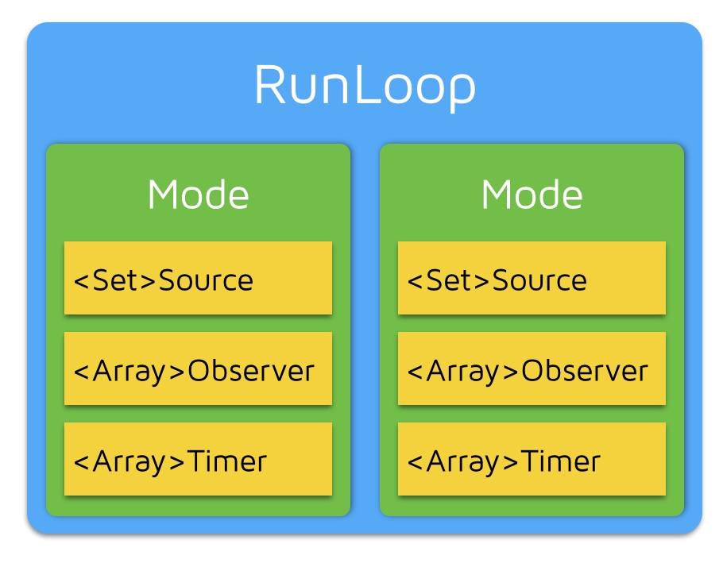
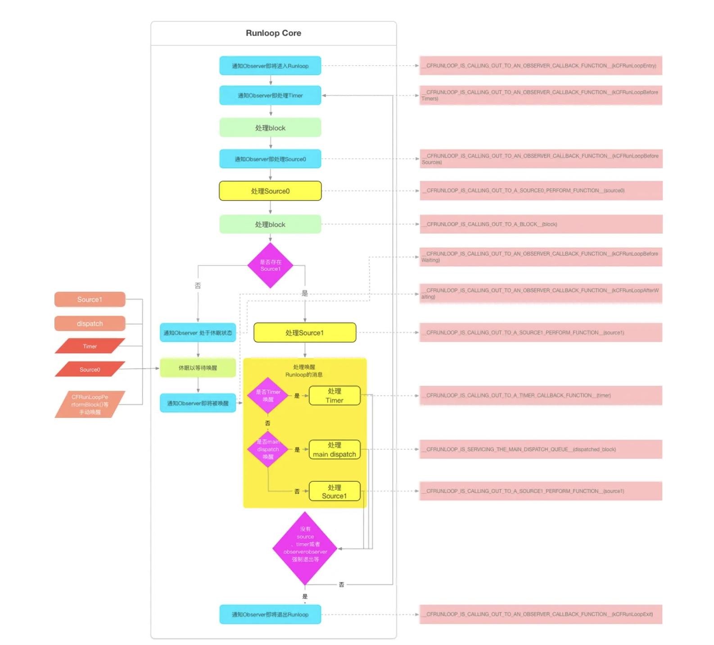
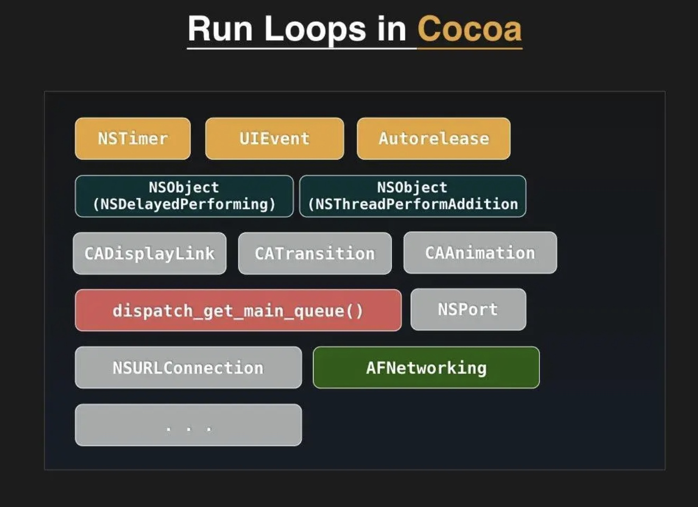

RunLoop
1.什么是RunLoop
说到runloop就必须要提到线程，比如我们开辟了一个线程，执行一个函数，当这个函数return的时候，线程也就被回收了。那如果我们写一个app，进入app，用户什么都不操作，return，app就关了。这显然不可以。那我们做一个简单粗暴的方法，写一个死循环，这样就不会return了，但CPU资源直接就被拉满了。所以这时候我们需要一个机制，就是有需要处理的事件的时候就处理，没有的话，就休眠，这就是EventLoop模型(下文中所有的代码都是伪代码，因为要适配不同的平台，还有迭代的版本很多等原因，源码比较晦涩难懂，毕竟很多内核API我们都不理解其作用，我们只能根据函数名，等信息猜测其逻辑，这是源码地址：https://github.com/apple/swift-corelibs-foundation/blob/main/CoreFoundation/RunLoop.subproj/CFRunLoop.c)
//伪代码
function loop() {
do {
var message = get_next_message();
process_message(message);
} while (message != quit);
}
简单来说就是这样一个循环，当没有get_next_message的时候，就停在这里，休眠。
有了它之后，我们的就可以实现UI Event队列，延迟回调，自动释放池等功能。模型是很简单，但要实现这些功能，逻辑还是比较复杂的，不过这部分的知识我觉得理解原理比较重要，这些API实际开发中我们用不到。不过有时候我们可以基于这个原理，去设计一个类，来满足一些业务需求。
2.RunLoop和线程的关系
/// 全局的Dictionary，key 是 pthread_t， value 是 CFRunLoopRef
static CFMutableDictionaryRef loopsDic;
/// 访问 loopsDic 时的锁
static CFSpinLock_t loopsLock;
/// 获取一个 pthread 对应的 RunLoop。
CFRunLoopRef _CFRunLoopGet(pthread_t thread) {
OSSpinLockLock(&loopsLock);
if (!loopsDic) {
// 第一次进入时，初始化全局Dic，并先为主线程创建一个 RunLoop。
loopsDic = CFDictionaryCreateMutable();
CFRunLoopRef mainLoop = _CFRunLoopCreate();
CFDictionarySetValue(loopsDic, pthread_main_thread_np(), mainLoop);
}
/// 直接从 Dictionary 里获取。
CFRunLoopRef loop = CFDictionaryGetValue(loopsDic, thread));
if (!loop) {
/// 取不到时，创建一个
loop = _CFRunLoopCreate();
CFDictionarySetValue(loopsDic, thread, loop);
/// 注册一个回调，当线程销毁时，顺便也销毁其对应的 RunLoop。
_CFSetTSD(..., thread, loop, __CFFinalizeRunLoop);
}
OSSpinLockUnLock(&loopsLock);
return loop;
}
CFRunLoopRef CFRunLoopGetMain() {
return _CFRunLoopGet(pthread_main_thread_np());
}
CFRunLoopRef CFRunLoopGetCurrent() {
return _CFRunLoopGet(pthread_self());
}
可以看出来，线程和runloop是一一对应的关系
简单点理解，就可以看成上边的伪代码static CFMutableDictionaryRef loopsDic;用 map 存的。线程是key，loop是value
3.RunLoop的内部结构
在 CoreFoundation 里面关于 RunLoop 有5个类:
CFRunLoopRef
CFRunLoopModeRef
CFRunLoopSourceRef
CFRunLoopTimerRef
CFRunLoopObserverRef
其中 CFRunLoopModeRef 类并没有对外暴露，只是通过 CFRunLoopRef 的接口进行了封装。他们的关系如下:

一个 RunLoop 包含若干个 Mode，每个 Mode 又包含若干个 Source/Timer/Observer。每次调用 RunLoop 的主函数时，只能指定其中一个 Mode，这个Mode被称作 CurrentMode。如果需要切换 Mode，只能退出 Loop，再重新指定一个 Mode 进入。这样做主要是为了分隔开不同组的 Source/Timer/Observer，让其互不影响。
Source 有两种：
Source0
特点
非端口驱动：Source0是非基于端口的输入源，它不依赖于内核提供的端口或文件描述符。
手动唤醒：Source0通常需要手动唤醒RunLoop来处理事件。
source0是App内部事件，由App自己管理的UIEvent、CFSocket都是source0。当一个source0事件准备执行的时候，必须要先把它标记为signal状态
Source1
特点
基于端口：Source1是基于端口（port）或文件描述符的输入源，依赖于内核提供的端口。
自动唤醒：Source1在数据到达时会自动唤醒RunLoop，因此不需要手动唤醒。
系统事件：Source1通常用于处理系统级别的事件，如网络数据、系统通知等。
使用场景
网络请求：当网络数据到达时，可以使用Source1来处理网络响应。
系统通知：处理基于系统端口的通知或消息，例如分布式通知、Mach端口消息等。
CFRunLoopTimer 是基于时间的触发器，它和 NSTimer 是toll-free bridged 的，可以混用。其包含一个时间长度和一个回调（函数指针）。当其加入到 RunLoop 时，RunLoop会注册对应的时间点，当时间点到时，RunLoop会被唤醒以执行那个回调。
CFRunLoopObserverRef 是观察者，每个 Observer 都包含了一个回调（函数指针），当 RunLoop 的状态发生变化时，观察者就能通过回调接受到这个变化。可以观测的时间点有以下几个：
typedef CF_OPTIONS(CFOptionFlags, CFRunLoopActivity) {
kCFRunLoopEntry = (1UL << 0), // 即将进入Loop
kCFRunLoopBeforeTimers = (1UL << 1), // 即将处理 Timer
kCFRunLoopBeforeSources = (1UL << 2), // 即将处理 Source
kCFRunLoopBeforeWaiting = (1UL << 5), // 即将进入休眠
kCFRunLoopAfterWaiting = (1UL << 6), // 刚从休眠中唤醒
kCFRunLoopExit = (1UL << 7), // 即将退出Loop
};
上面的 Source/Timer/Observer 被统称为 mode item，一个 item 可以被同时加入多个 mode。但一个 item 被重复加入同一个 mode 时是不会有效果的。如果一个 mode 中一个 item 都没有，则 RunLoop 会直接退出，不进入循环。
RunLoop中的Mode
struct __CFRunLoopMode {
CFStringRef _name; // Mode Name, 例如 @"kCFRunLoopDefaultMode"
CFMutableSetRef _sources0; // Set
CFMutableSetRef _sources1; // Set
CFMutableArrayRef _observers; // Array
CFMutableArrayRef _timers; // Array
...
};
struct __CFRunLoop {
CFMutableSetRef _commonModes; // Set
CFMutableSetRef _commonModeItems; // Set<Source/Observer/Timer>
CFRunLoopModeRef _currentMode; // Current Runloop Mode
CFMutableSetRef _modes; // Set
...
};
他们的大概结构是这样的。
这里有个commonModes的概念。一个 Mode 可以将自己标记为“Common”属性（通过将其 ModeName 添加到 RunLoop 的 “commonModes” 中）。每当 RunLoop 的内容发生变化时，RunLoop 都会自动将 _commonModeItems 里的 Source/Observer/Timer 同步到具有 “Common” 标记的所有Mode里。
这里就有了那个经典问题，timer定时器在scrollview滑动的时候，不会回调的问题。
因为 默认我们的timer是加到了 kCFRunLoopDefaultMode中，但用户滑动的时候runloop会切换到UITrackingRunLoopMode，那kCFRunLoopDefaultMode中的timers的回调就不会被调用。一种办法就是将这个 Timer 分别加入这两个 Mode。还有一种方式，就是将 Timer 加入到顶层的 RunLoop 的 “commonModeItems” 中。”commonModeItems” 被 RunLoop 自动更新到所有具有”Common”属性的 Mode 里去。
苹果公开提供的 Mode 有两个：kCFRunLoopDefaultMode (NSDefaultRunLoopMode) 和 UITrackingRunLoopMode，你可以用这两个 Mode Name 来操作其对应的 Mode。一共有5个，后面会说。
4.RunLoop的内部逻辑

/// 用DefaultMode启动
void CFRunLoopRun(void) {
CFRunLoopRunSpecific(CFRunLoopGetCurrent(), kCFRunLoopDefaultMode, 1.0e10, false);
}
/// 用指定的Mode启动，允许设置RunLoop超时时间
int CFRunLoopRunInMode(CFStringRef modeName, CFTimeInterval seconds, Boolean stopAfterHandle) {
return CFRunLoopRunSpecific(CFRunLoopGetCurrent(), modeName, seconds, returnAfterSourceHandled);
}
/// RunLoop的实现
int CFRunLoopRunSpecific(runloop, modeName, seconds, stopAfterHandle) {
/// 首先根据modeName找到对应mode
CFRunLoopModeRef currentMode = __CFRunLoopFindMode(runloop, modeName, false);
/// 如果mode里没有source/timer/observer, 直接返回。
if (__CFRunLoopModeIsEmpty(currentMode)) return;
/// 1. 通知 Observers: RunLoop 即将进入 loop。
__CFRunLoopDoObservers(runloop, currentMode, kCFRunLoopEntry);
/// 内部函数，进入loop
__CFRunLoopRun(runloop, currentMode, seconds, returnAfterSourceHandled) {
Boolean sourceHandledThisLoop = NO;
int retVal = 0;
do {
/// 2. 通知 Observers: RunLoop 即将触发 Timer 回调。
__CFRunLoopDoObservers(runloop, currentMode, kCFRunLoopBeforeTimers);
/// 3. 通知 Observers: RunLoop 即将触发 Source0 (非port) 回调。
__CFRunLoopDoObservers(runloop, currentMode, kCFRunLoopBeforeSources);
/// 执行被加入的block
__CFRunLoopDoBlocks(runloop, currentMode);
/// 4. RunLoop 触发 Source0 (非port) 回调。
sourceHandledThisLoop = __CFRunLoopDoSources0(runloop, currentMode, stopAfterHandle);
/// 执行被加入的block
__CFRunLoopDoBlocks(runloop, currentMode);
/// 5. 如果有 Source1 (基于port) 处于 ready 状态，直接处理这个 Source1 然后跳转去处理消息。
if (__Source0DidDispatchPortLastTime) {
Boolean hasMsg = __CFRunLoopServiceMachPort(dispatchPort, &msg)
if (hasMsg) goto handle_msg;
}
/// 通知 Observers: RunLoop 的线程即将进入休眠(sleep)。
if (!sourceHandledThisLoop) {
__CFRunLoopDoObservers(runloop, currentMode, kCFRunLoopBeforeWaiting);
}
/// 7. 调用 mach_msg 等待接受 mach_port 的消息。线程将进入休眠, 直到被下面某一个事件唤醒。
/// • 一个基于 port 的Source 的事件。
/// • 一个 Timer 到时间了
/// • RunLoop 自身的超时时间到了
/// • 被其他什么调用者手动唤醒
__CFRunLoopServiceMachPort(waitSet, &msg, sizeof(msg_buffer), &livePort) {
mach_msg(msg, MACH_RCV_MSG, port); // thread wait for receive msg
}
/// 8. 通知 Observers: RunLoop 的线程刚刚被唤醒了。
__CFRunLoopDoObservers(runloop, currentMode, kCFRunLoopAfterWaiting);
/// 收到消息，处理消息。
handle_msg:
/// 9.1 如果一个 Timer 到时间了，触发这个Timer的回调。
if (msg_is_timer) {
__CFRunLoopDoTimers(runloop, currentMode, mach_absolute_time())
}
/// 9.2 如果有dispatch到main_queue的block，执行block。
else if (msg_is_dispatch) {
__CFRUNLOOP_IS_SERVICING_THE_MAIN_DISPATCH_QUEUE__(msg);
}
/// 9.3 如果一个 Source1 (基于port) 发出事件了，处理这个事件
else {
CFRunLoopSourceRef source1 = __CFRunLoopModeFindSourceForMachPort(runloop, currentMode, livePort);
sourceHandledThisLoop = __CFRunLoopDoSource1(runloop, currentMode, source1, msg);
if (sourceHandledThisLoop) {
mach_msg(reply, MACH_SEND_MSG, reply);
}
}
/// 执行加入到Loop的block
__CFRunLoopDoBlocks(runloop, currentMode);
if (sourceHandledThisLoop && stopAfterHandle) {
/// 进入loop时参数说处理完事件就返回。
retVal = kCFRunLoopRunHandledSource;
} else if (timeout) {
/// 超出传入参数标记的超时时间了
retVal = kCFRunLoopRunTimedOut;
} else if (__CFRunLoopIsStopped(runloop)) {
/// 被外部调用者强制停止了
retVal = kCFRunLoopRunStopped;
} else if (__CFRunLoopModeIsEmpty(runloop, currentMode)) {
/// source/timer/observer一个都没有了
retVal = kCFRunLoopRunFinished;
}
/// 如果没超时，mode里没空，loop也没被停止，那继续loop。
} while (retVal == 0);
}
/// 10. 通知 Observers: RunLoop 即将退出。
__CFRunLoopDoObservers(rl, currentMode, kCFRunLoopExit);
}
这里的代码比较复杂，但一行行的看还是可以理解的，它就是上边图片中逻辑的实现。
其中关键代码就是
__CFRunLoopServiceMachPort(waitSet, &msg, sizeof(msg_buffer), &livePort) {
mach_msg(msg, MACH_RCV_MSG, port); // thread wait for receive msg
}
RunLoop 的核心是基于 mach port，它是一个进程间通信的系统基础服务，比如蓝牙连接，是蓝牙程序实现的，但它要通知App蓝牙连接成功了，这时候就需要mach port发送对应的信息，然后唤醒runloop，作出对应的操作。
5.Runloop的实际应用

首先我们可以看一下 App 启动后 RunLoop 的状态：
CFRunLoop {
current mode = kCFRunLoopDefaultMode
common modes = {
UITrackingRunLoopMode
kCFRunLoopDefaultMode
}
common mode items = {
// source0 (manual)
CFRunLoopSource {order =-1, {
callout = _UIApplicationHandleEventQueue}}
CFRunLoopSource {order =-1, {
callout = PurpleEventSignalCallback }}
CFRunLoopSource {order = 0, {
callout = FBSSerialQueueRunLoopSourceHandler}}
// source1 (mach port)
CFRunLoopSource {order = 0, {port = 17923}}
CFRunLoopSource {order = 0, {port = 12039}}
CFRunLoopSource {order = 0, {port = 16647}}
CFRunLoopSource {order =-1, {
callout = PurpleEventCallback}}
CFRunLoopSource {order = 0, {port = 2407,
callout = _ZL20notify_port_callbackP12__CFMachPortPvlS1_}}
CFRunLoopSource {order = 0, {port = 1c03,
callout = __IOHIDEventSystemClientAvailabilityCallback}}
CFRunLoopSource {order = 0, {port = 1b03,
callout = __IOHIDEventSystemClientQueueCallback}}
CFRunLoopSource {order = 1, {port = 1903,
callout = __IOMIGMachPortPortCallback}}
// Ovserver
CFRunLoopObserver {order = -2147483647, activities = 0x1, // Entry
callout = _wrapRunLoopWithAutoreleasePoolHandler}
CFRunLoopObserver {order = 0, activities = 0x20, // BeforeWaiting
callout = _UIGestureRecognizerUpdateObserver}
CFRunLoopObserver {order = 1999000, activities = 0xa0, // BeforeWaiting | Exit
callout = _afterCACommitHandler}
CFRunLoopObserver {order = 2000000, activities = 0xa0, // BeforeWaiting | Exit
callout = _ZN2CA11Transaction17observer_callbackEP19__CFRunLoopObservermPv}
CFRunLoopObserver {order = 2147483647, activities = 0xa0, // BeforeWaiting | Exit
callout = _wrapRunLoopWithAutoreleasePoolHandler}
// Timer
CFRunLoopTimer {firing = No, interval = 3.1536e+09, tolerance = 0,
next fire date = 453098071 (-4421.76019 @ 96223387169499),
callout = _ZN2CAL14timer_callbackEP16__CFRunLoopTimerPv (QuartzCore.framework)}
},
modes ＝ {
CFRunLoopMode {
sources0 = { /* same as 'common mode items' */ },
sources1 = { /* same as 'common mode items' */ },
observers = { /* same as 'common mode items' */ },
timers = { /* same as 'common mode items' */ },
},
CFRunLoopMode {
sources0 = { /* same as 'common mode items' */ },
sources1 = { /* same as 'common mode items' */ },
observers = { /* same as 'common mode items' */ },
timers = { /* same as 'common mode items' */ },
},
CFRunLoopMode {
sources0 = {
CFRunLoopSource {order = 0, {
callout = FBSSerialQueueRunLoopSourceHandler}}
},
sources1 = (null),
observers = {
CFRunLoopObserver >{activities = 0xa0, order = 2000000,
callout = _ZN2CA11Transaction17observer_callbackEP19__CFRunLoopObservermPv}
)},
timers = (null),
},
CFRunLoopMode {
sources0 = {
CFRunLoopSource {order = -1, {
callout = PurpleEventSignalCallback}}
},
sources1 = {
CFRunLoopSource {order = -1, {
callout = PurpleEventCallback}}
},
observers = (null),
timers = (null),
},
CFRunLoopMode {
sources0 = (null),
sources1 = (null),
observers = (null),
timers = (null),
}
}
}
可以看到，系统默认注册了5个Mode:
- kCFRunLoopDefaultMode: App的默认 Mode，通常主线程是在这个 Mode 下运行的。
- UITrackingRunLoopMode: 界面跟踪 Mode，用于 ScrollView 追踪触摸滑动，保证界面滑动时不受其他 Mode 影响。
- UIInitializationRunLoopMode: 在刚启动 App 时第进入的第一个 Mode，启动完成后就不再使用。
- GSEventReceiveRunLoopMode: 接受系统事件的内部 Mode，通常用不到。
- kCFRunLoopCommonModes: 这是一个占位的 Mode，没有实际作用。
AutoreleasePool
App启动后，苹果在主线程 RunLoop 里注册了两个 Observer，其回调都是 _wrapRunLoopWithAutoreleasePoolHandler()。
第一个 Observer 监视的事件是 Entry(即将进入Loop)，其回调内会调用 _objc_autoreleasePoolPush() 创建自动释放池。其 order 是-2147483647，优先级最高，保证创建释放池发生在其他所有回调之前。
第二个 Observer 监视了两个事件： BeforeWaiting(准备进入休眠) 时调用_objc_autoreleasePoolPop() 和 _objc_autoreleasePoolPush() 释放旧的池并创建新池；Exit(即将退出Loop) 时调用 _objc_autoreleasePoolPop() 来释放自动释放池。这个 Observer 的 order 是 2147483647，优先级最低，保证其释放池子发生在其他所有回调之后。
在主线程执行的代码，通常是写在诸如事件回调、Timer回调内的。这些回调会被 RunLoop 创建好的 AutoreleasePool 环绕着，所以不会出现内存泄漏，开发者也不必显示创建 Pool 了。
事件响应
这个验证流程比较复杂，结论是：
用户触发事件， IOKit.framework 生成一个 IOHIDEvent 事件并由 SpringBoard 接收，SpringBoard 会利用 mach port，产生 source1，来唤醒目标 APP 的 com.apple.uikit.eventfetch-thread 的 RunLoop。Eventfetch thread 会将 main runloop 中 __handleEventQueue 所对应的 source0 设置为 signalled == Yes 状态，同时唤醒 main RunLoop。mainRunLoop 则调用 __handleEventQueue 进行事件队列处理。
界面更新
当在操作 UI 时，比如改变了 Frame、更新了 UIView/CALayer 的层次时，或者手动调用了 UIView/CALayer 的 setNeedsLayout/setNeedsDisplay方法后，这个 UIView/CALayer 就被标记为待处理，并被提交到一个全局的容器去。
苹果注册了一个 Observer 监听 BeforeWaiting(即将进入休眠) 和 Exit (即将退出Loop) 事件，回调去执行一个很长的函数：
_ZN2CA11Transaction17observer_callbackEP19__CFRunLoopObservermPv()。这个函数里会遍历所有待处理的 UIView/CAlayer 以执行实际的绘制和调整，并更新 UI 界面。
这个函数内部的调用栈大概是这样的：
_ZN2CA11Transaction17observer_callbackEP19__CFRunLoopObservermPv()
QuartzCore:CA::Transaction::observer_callback:
CA::Transaction::commit();
CA::Context::commit_transaction();
CA::Layer::layout_and_display_if_needed();
CA::Layer::layout_if_needed();
[CALayer layoutSublayers];
[UIView layoutSubviews];
CA::Layer::display_if_needed();
[CALayer display];
[UIView drawRect];
总结
Runloop的模型其实很简单的，但是当它应用在实际的操作系统中的时候，就会很复杂，因为系统中功能非常多，而且很多都是依赖Runloop去实现的。这就导致了本来我们就不是写内核的开发者，对内核的API了解很少，而且苹果的很多框架都是闭源的，很多时候都是靠猜测它的行为，想要去看懂Runloop中每一行的实际效果确实是很不容易。但理解Runloop对我们还是很有帮助的。
参考资料：
https://blog.ibireme.com/2015/05/18/runloop/
https://juejin.cn/post/6844903588712415239#heading-24
https://juejin.cn/post/6904921175546298375